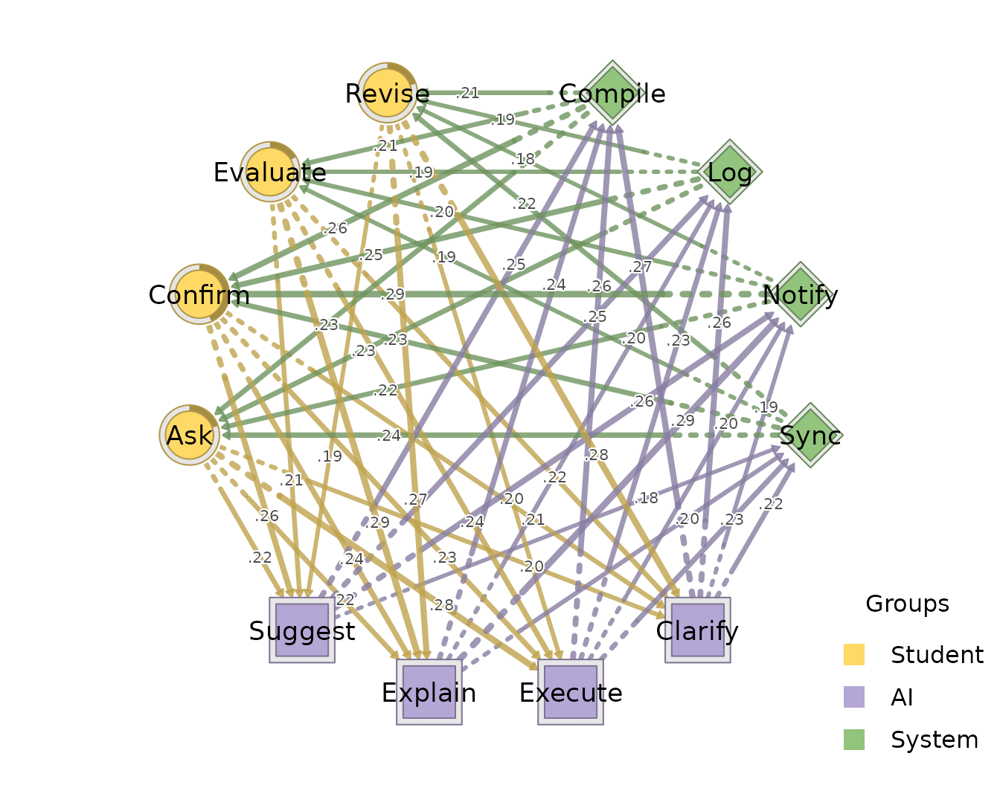
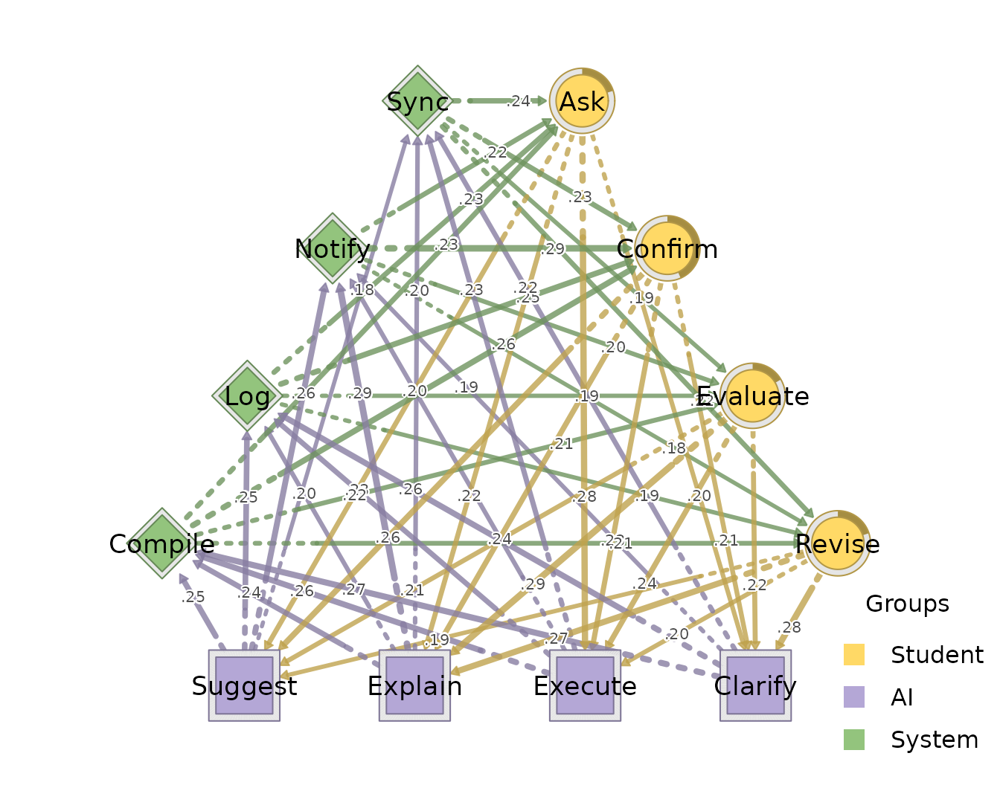
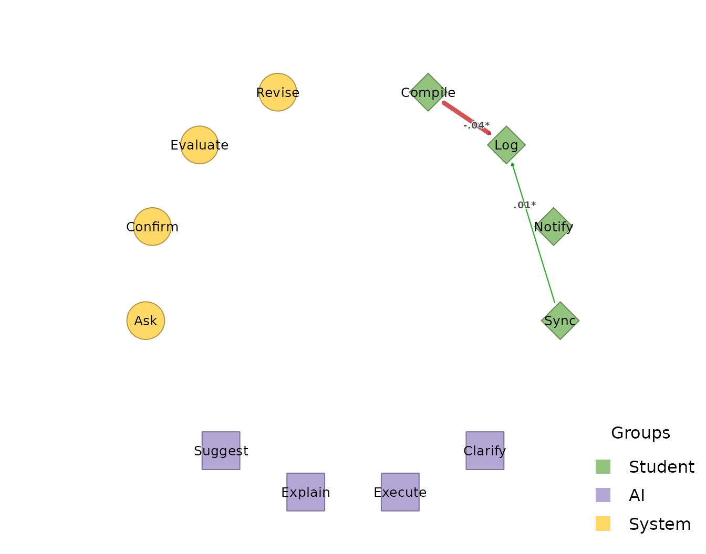
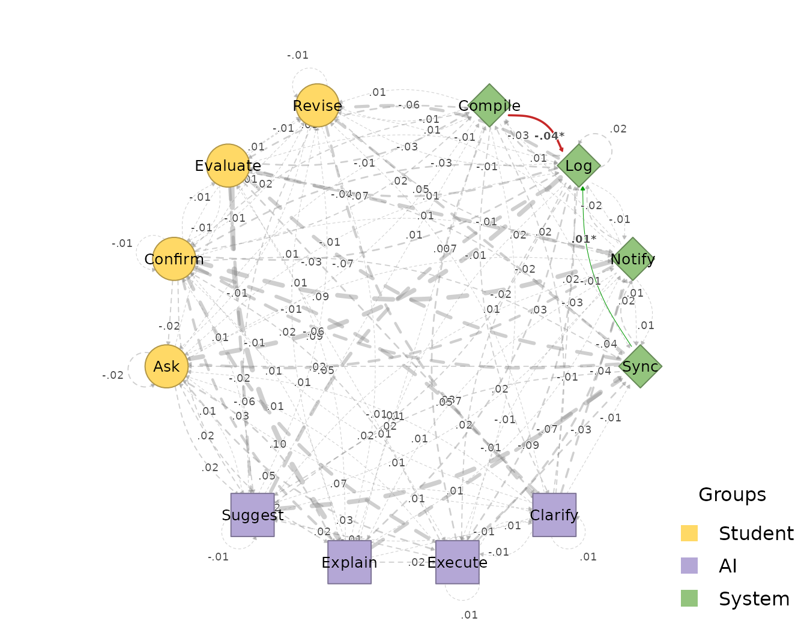

Three or more actor groups
Written by Mohammed Saqr and Sonsoles López-Pernas
Source:vignettes/articles/multigroup.Rmd
multigroup.RmdMany learning settings involve more than two kinds of actor. A student working with an AI assistant inside a programming environment interacts with the assistant and with the environment itself, whose compiler messages, notifications and logs are events of a third kind. A classroom dialogue can involve a teacher, students and a conversational agent. Heterogeneous transition network analysis does not depend on there being two actors: the actor partition can have any number of groups, and the weight matrix is then partitioned into one block for every ordered pair of actors. With three actors there are three within-actor blocks and six between-actor blocks, so the question of who hands over to whom has six answers instead of two.
This guide builds a three-actor network, reads its actor-pair structure, draws it in the layouts available for several groups, counts the three-actor meta-paths, and compares two networks. Every function used for two actors works unchanged.
Data
The package has no bundled data with three actor types, so the guide uses a small simulated study of 30 sessions in which a Student, an AI assistant and a System (the programming environment) act in turn. Each actor has four codes.
-
Student:
Ask,Confirm,Revise,Evaluate. -
AI:
Suggest,Explain,Execute,Clarify. -
System:
Log,Notify,Compile,Sync. -
Session and order:
session_idandorder_in_session. In each session the three actors act in the fixed cycle Student, AI, System for as long as each has events (15 to 25 per actor and session), and the codes within an actor are drawn at random.
The turn order is therefore built into the data, and the codes carry no structure. The analyses below should recover the cycle and nothing else.
set.seed(42)
student_codes <- c("Ask", "Confirm", "Revise", "Evaluate")
ai_codes <- c("Suggest", "Explain", "Execute", "Clarify")
system_codes <- c("Log", "Notify", "Compile", "Sync")
sessions <- sprintf("S%03d", seq_len(30))
make_events <- function(codes, sessions, offset) {
rows <- lapply(sessions, function(sid) {
n <- sample(15:25, 1)
data.frame(session_id = sid, code = sample(codes, n, replace = TRUE),
order_in_session = seq_len(n) * 3L - offset)
})
do.call(rbind, rows)
}
student_data <- make_events(student_codes, sessions, 2L)
ai_data <- make_events(ai_codes, sessions, 1L)
system_data <- make_events(system_codes, sessions, 0L)Building a network with three actors
The three tables are passed as a named list; the names become the actor types, in the order given. A single table with an actor column or a codebook works in the same way (see Input formats).
net3 <- build_htna(list(Student = student_data, AI = ai_data,
System = system_data))
summary(net3)
#> <htna network>
#> Method: relative
#> Sessions: 30 (max 70 timesteps)
#> Nodes: 12
#> Edges: 116 / 144 (non-zero)
#>
#> Actor types (3):
#> Student (4 nodes): Ask, Confirm, Evaluate, Revise
#> AI (4 nodes): Clarify, Execute, Explain, Suggest
#> System (4 nodes): Compile, Log, Notify, Sync
#>
#> Edge counts by actor (rows = source, cols = target):
#> Student AI System
#> Student 3 16 14
#> AI 13 9 16
#> System 16 15 14
#>
#> Network metrics:
#> metric value
#> Node Count 12.0000
#> Edge Count 116.0000
#> Network Density 0.8788
#> Mean Distance 0.0188
#> Mean Out-Strength 1.0000
#> SD Out-Strength 0.0000
#> Mean In-Strength 1.0000
#> SD In-Strength 0.0916
#> Mean Out-Degree 9.6667
#> SD Out-Degree 1.5570
#> Centralization (Out-Degree) 0.1818
#> Centralization (In-Degree) 0.1818
#> Reciprocity 0.8727The network has 12 nodes, four per actor, and 116 of its 144 possible edges are non-zero. The edge counts by actor form a three-by-three table. As a tidy table, one row per directed actor pair:
as.data.frame(summary(net3), what = "actor_pairs")
#> source_actor target_actor n_edges
#> 1 Student Student 3
#> 2 Student AI 16
#> 3 Student System 14
#> 4 AI Student 13
#> 5 AI AI 9
#> 6 AI System 16
#> 7 System Student 16
#> 8 System AI 15
#> 9 System System 14The block structure reflects the turn cycle: the Student-to-Student block has only 3 non-zero edges, because a student event is followed by another student event only where the other actors have run out of events, while the blocks of the cycle (Student to AI, AI to System, System to Student) have 16 each, all possible edges. The other blocks are filled at the ends of sessions, where the remaining actors continue among themselves.
Drawing three actor groups
With the default circular layout each actor occupies one arc of the circle, coloured and shaped by actor.
plot_htna(net3)
layout = "polygon" places each actor along one side of a
regular polygon, a triangle for three actors, which separates the groups
more clearly.
plot_htna(net3, layout = "polygon")
Which three-actor templates recur?
extract_meta_paths() at the type level counts runs of
actor types. With three actors there are 27 possible templates of length
three.
print(extract_meta_paths(net3, level = "type", length = 3), n = 6)
#> Meta-paths (type-level) over 30 sequences
#> Rows: 17 | Lengths: 3 | Gaps: 0
#> schema length gap count n_seq support frequency lift
#> Student->AI->System 3 0 510 30 1.000 0.295 7.98
#> AI->System->Student 3 0 497 30 1.000 0.288 7.78
#> System->Student->AI 3 0 487 30 1.000 0.282 7.62
#> AI->System->AI 3 0 41 10 0.333 0.024 0.62
#> System->AI->System 3 0 37 10 0.333 0.021 0.56
#> System->Student->System 3 0 32 10 0.333 0.019 0.50
#> ... (11 more)The three rotations of the cycle
(Student->AI->System,
AI->System->Student,
System->Student->AI) occur in all 30 sessions and
account for 0.295, 0.288 and 0.282 of the runs, about eight times as
often as expected from the actors’ overall shares (lift 7.62 to 7.98).
The next most frequent template, AI->System->AI,
occurs 41 times in 10 sessions, less often than expected (lift 0.62).
The meta-paths recover the built-in turn order exactly. A schema returns
the concrete instances of one template:
print(extract_meta_paths(net3, schema = "Student->AI->System"), n = 6)
#> State-level instances of schema 'Student->AI->System' over 30 sequences
#> Rows: 64 | Lengths: 3 | Gaps: 0
#> schema meta_schema length gap count n_seq support frequency
#> Confirm->Clarify->Compile Student->AI->System 3 0 15 14 0.467 0.029
#> Confirm->Execute->Compile Student->AI->System 3 0 13 12 0.400 0.025
#> Evaluate->Explain->Compile Student->AI->System 3 0 13 12 0.400 0.025
#> Confirm->Suggest->Sync Student->AI->System 3 0 13 11 0.367 0.025
#> Ask->Explain->Notify Student->AI->System 3 0 12 11 0.367 0.024
#> Confirm->Explain->Notify Student->AI->System 3 0 12 12 0.400 0.024
#> lift
#> 11.86
#> 10.08
#> 13.00
#> 12.66
#> 11.07
#> 9.53
#> ... (58 more)All 64 combinations of four codes per actor occur, and because the
codes within each actor were drawn at random they have similar counts
(the most frequent, Confirm->Clarify->Compile, occurs
15 times); no particular student move leads to a particular AI move.
Their high lifts come from the turn cycle, not from the codes.
Do two samples from the same process differ?
A second set of 30 sessions is simulated from the same process. A permutation test of the two networks should find no difference.
set.seed(7)
net3b <- build_htna(list(
Student = make_events(student_codes, sessions, 2L),
AI = make_events(ai_codes, sessions, 1L),
System = make_events(system_codes, sessions, 0L)
))
perm3 <- permutation_htna(net3, net3b, iter = 200, seed = 1)
perm3
#> Permutation Test: Transition Network (relative probabilities) [directed]
#> Iterations: 200 | Alpha: 0.05
#> Nodes: 12 | Edges tested: 136 | Significant: 2
#> Global test (networks differ overall?): M = 2.693 (p = 0.587) | S = 0.103 (p = 0.846)The global test finds no difference (M = 2.693, p = 0.587; S = 0.103, p = 0.846), and 2 of the 136 tested edges fall below 0.05, fewer than the seven expected by chance at that level. The test behaves as it should when the two networks come from one process. The difference network draws the two nominally significant edges:
plot_htna_diff(perm3)
With show_nonsig = TRUE, the non-significant differences
are added as dashed edges.
plot_htna_diff(perm3, show_nonsig = TRUE)
What changes with more actors
| Step | Two actors | Three or more actors |
|---|---|---|
| Actor-pair blocks | 4 | the number of actors squared (9 for three) |
| Layout | circular, two arcs | circular arcs, or layout = "polygon"
|
| Meta-paths of length three | 8 templates | the number of actors cubed (27 for three) |
| Comparison and assessment |
compare_htna(), permutation_htna(),
bootstrap_htna()
|
unchanged |
The number of blocks and templates grows quickly with the number of
actors, so more sessions are needed to estimate every block; the
actor-pair table of summary() shows which blocks rest on
few edges.